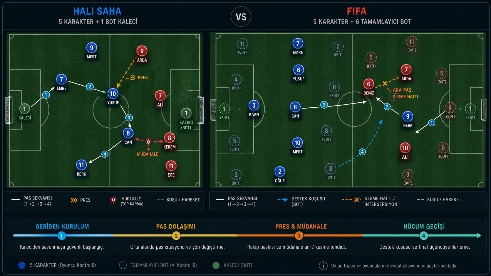

Kendi beşlini kur
Dönem kartları, branşa özel puanlar ve rol tercihleriyle her turnuvada farklı bir takım yarat.
Karakter kartlarını draft et. Takımını ve oyun planını kur. Futboldan Dust II'ye uzanan canlı maç motorlarında arkadaşlarına meydan oku.

Dönem kartları, branşa özel puanlar ve rol tercihleriyle her turnuvada farklı bir takım yarat.
Basit, Taktiksel ve Beta modlarıyla tempoyu, rolleri ve oyun stilini sen belirle.
Canlı anlatım, konumsal futbol, Dust II çatışmaları ve ayrıntılı performans merkeziyle maçın içinde kal.
Docker kurulumu boş bir veritabanı oluşturur; gerçek proje verileri pakete dahil değildir.
git clone https://github.com/EddizEge/5x5.git
cd 5x5
docker compose up -d --build